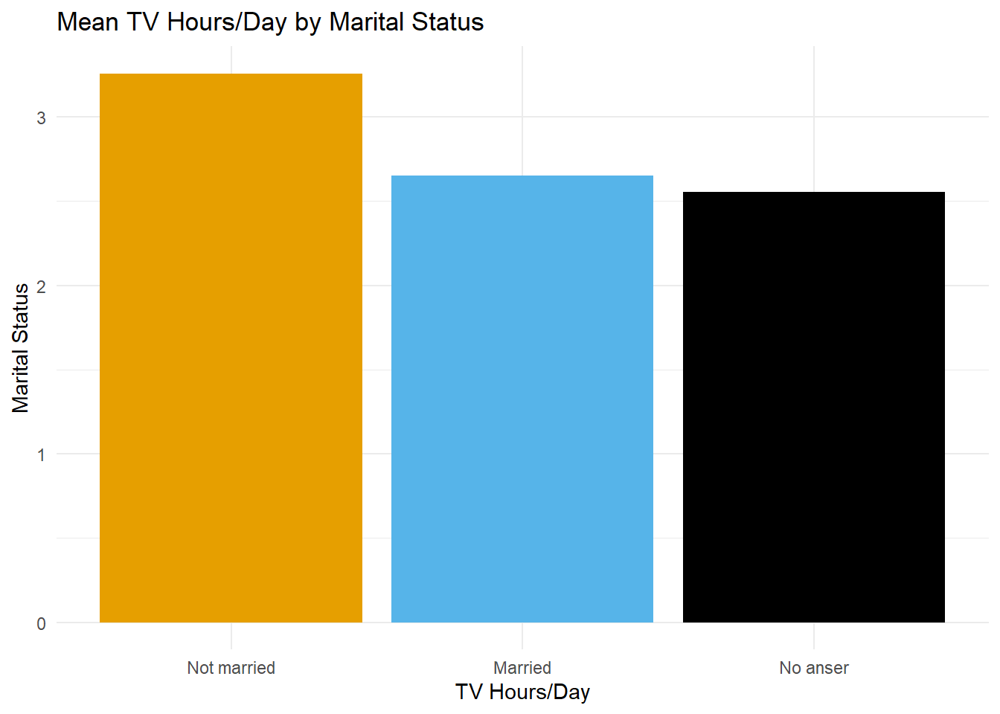

Code
library(tidyverse)
library(ggthemes)
library(gt)
theme_set(theme_minimal())library(tidyverse)
library(ggthemes)
library(gt)
theme_set(theme_minimal())gss_cat data within the {forcats} package.reorder the levels of marital according to tvhours.gss_cat %>%
drop_na(tvhours) %>%
group_by(marital) %>%
summarise(tvhours_mean = mean(tvhours)) %>%
ggplot(aes(tvhours_mean, fct_reorder(marital, tvhours_mean))) +
geom_point() +
labs(y = "Marital Status",
x = "TV Hours/Day",
title = "Mean TV Hours/Day by Marital Status")
kable().
recode or collapse the marital column into three categories: “Not married”, “Married”, and “No answer”.levels(gss_cat$marital)[1] "No answer" "Never married" "Separated" "Divorced"
[5] "Widowed" "Married" table(gss_cat$marital)
No answer Never married Separated Divorced Widowed
17 5416 743 3383 1807
Married
10117 gss_cat %>%
count(marital)# A tibble: 6 × 2
marital n
<fct> <int>
1 No answer 17
2 Never married 5416
3 Separated 743
4 Divorced 3383
5 Widowed 1807
6 Married 10117gss_cat %>%
mutate(marital = fct_collapse(marital,
"Not married" = c("Never married", "Separated", "Divorced", "Widowed"),
"Married" = c("Married"),
"No anser" = c("No answer"))) %>%
group_by(marital) %>%
summarise(tvhours_mean = mean(tvhours, na.rm = TRUE)) %>%
ggplot(aes(fct_relevel(marital, "Not married", "Married"), tvhours_mean)) +
geom_col(aes(fill = marital)) +
scale_fill_colorblind() +
labs(y = "Marital Status",
x = "TV Hours/Day",
title = "Mean TV Hours/Day by Marital Status") +
theme(legend.position = "none")
{gt}.
gss_cat %>%
mutate(marital = fct_collapse(marital,
"Not married" = c("Never married", "Separated", "Divorced", "Widowed"),
"Married" = c("Married"),
"No answer" = c("No answer"))) %>%
group_by(marital) %>%
summarise(tvhours_mean = mean(tvhours, na.rm = TRUE)) %>%
arrange(tvhours_mean) %>%
gt() %>%
fmt_number(
columns = 2,
decimals = 1
) %>%
tab_style(
style = cell_fill(color = "yellow"),
locations = cells_body(
columns = c(1, 2),
rows = 3
)
) %>%
cols_label(
marital = "Marital Status",
tvhours_mean = "Mean TV hours/day"
)| Marital Status | Mean TV hours/day |
|---|---|
| No answer | 2.6 |
| Married | 2.7 |
| Not married | 3.3 |
This lab borrows from Garrett Grolemund’s Remaster the Tidyverse materials.